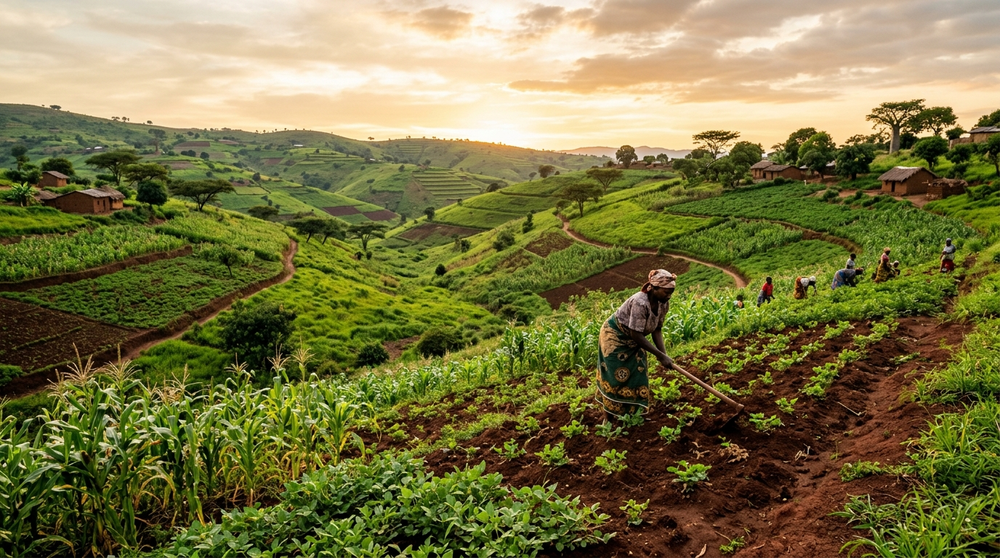
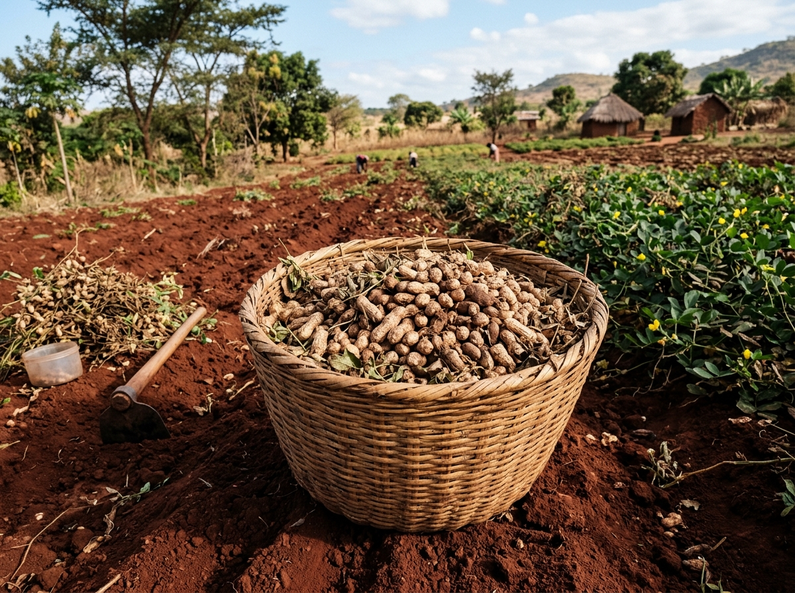
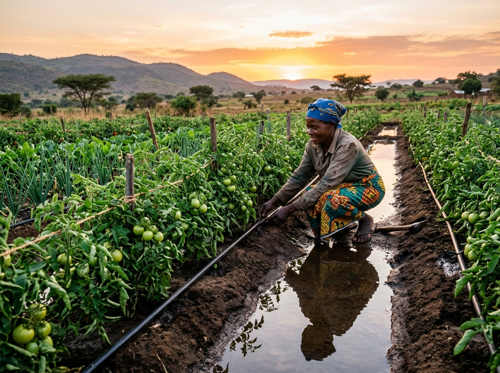

Dipatimenti Yolimbikitsa Zaulimi (Extension)
Maphunziro kwa alimi, uphungu wa m'munda ndi chithandizo cha akatswiri a zaulimi.
Pitani ku Extension ↗Chidziwitso cha ulimi choyenera alimi aang'onoang'ono, ophunzira ndi mabizinesi a zaulimi ku Malawi. Pezani kalendala ya ulimi, njira zothanirana ndi tizilombo, mbewu zosiyanasiyana zoposa 16, mitengo ya pamsika yotsimikizika, ndi zanyengo zatsiku ndi tsiku.

Zigawo zofunika kwambiri zothandiza kukonzekera ulimi, kuteteza mbewu, komanso kudziwa mitengo pamsika.

Ndondomeko ya mwezi ndi mwezi yotsatira ntchito za m'munda, zikumbutso za nyengo, ndi nthawi zoyenera kubzala mbewu.

Malangizo a kalimidwe ka mbewu, mtundu wa nthaka, feteleza woyenera (wa pansi ndi wa pamwamba), ndi madera oyenera.

Zizindikiro za Nkhondo (Fall Armyworm), Mbozi ya m'chitsamba, Chikasu, ndi Chiwawu cha tomato limodzi ndi mankhwala oyenera.

Mitengo ya chimanga, mtedza, soya, ndi mpunga m'misika ya ku midzi ndi m'matauni yokhala ndi chitsimikizo.
Zitsanzo za mbewu zazikulu zomwe alimi ambiri amadalira. Tsegulani laibulale yonse kuti muone mbewu zoposa 16 zokhala ndi malangizo a kalimidwe.
Cereals • Chakudya
Mbewu yaikulu ya chakudya ku Malawi. Imakonda nthaka yakuya ya mchenga wosakanikirana ndi dongo komanso mvula ya 600–1200mm.

Legumes • MalondaMbewu yopatsa mafuta, ndalama ndi kukhazikitsa nayitrojeni m'nthaka. Mitundu yotchuka: CG7, Nsinjiro ndi Chitala.
Legumes • Puloteni
Mbewu yabwino yopangira chakudya, mafuta ndi kudyetsa ziweto. Imasowa feteleza wochepa wa nayitrojeni chifukwa imadzidyetsa yokha.
Fufuzani mpunga, chinangwa, mbatata, tomato, nyemba, nandolo, mbatata ya chizungu ndi fodya mu laibulale yokonzedwa bwino.
Njira zothandiza alimi aang'onoang'ono kupirira chilala, kukonza chonde cha nthaka, komanso kuonjezera zokolola.

Kupanga manyowa a kompositi ndi Mbeya kumachepetsa ndalama yogulira feteleza wa m'fakitale ndi kubwezeretsa chonde m'munda.
Njira zothirira za dambo ndi mizere zimateteza madzi kuti asatayike ndi kulola kulima masamba nthawi ya chilala.
Kuyanika chimanga ndi mtedza pansi pa 13.5% ya chinyezi kumateteza ku nkhungu ya aflatoxin ndi kuwonongeka m'nkhokwe.
Onani momwe nyengo ilili komanso zolosera zamasiku 7 m'maboma 12 a Malawi.
Lumikizanani ndi maofesi a boma ndi kafukufuku wazaulimi kuti mupeze malangizo ovomerezeka.
Maphunziro kwa alimi, uphungu wa m'munda ndi chithandizo cha akatswiri a zaulimi.
Pitani ku Extension ↗Chidziwitso cha mbewu zatsopano, kasamalidwe ndi njira zotetezera mbewu ku matenda.
Onani zambiri za mbewu ↗Kukonza chonde cha nthaka, kuchepetsa kukokoloka kwa nthaka ndi ulimi woteteza chilengedwe.
Onani za nthaka ↗